Обзор
На этой странице будут описаны инструменты, которые мы используем для исследования того, что происходит внутри физической системы.
p_draw_helpers 1
Отрисовывает физические прокси поверх отображаемой геометрии.
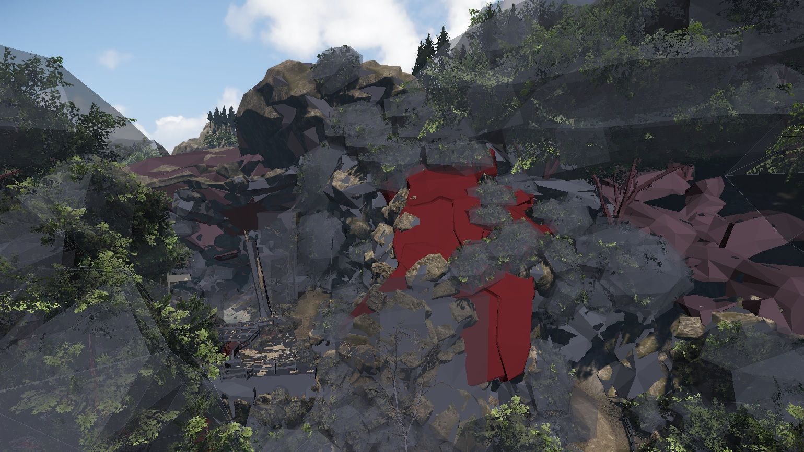
Объекты имеют цветовую кодировку, чтобы помочь отобразить сложность физических прокси. (Серый -> Красный).
Большинство объектов должны быть серыми, но геометрия становится более сложным, он закрашен красным.
p_proxy_highlight_threshold (по умолчанию 200)
Это устанавливает начало, которое, по нашему мнению, является подходящим числом для полигонов для физического прокси.
p_proxy_highlight_range (по умолчанию 800)
Когда число полигонов приближается к верхнему пределу (200+800), происходит красное затенение прокси. Между 200 и 1000 ваш прокси будет иметь разные оттенки красного. Как только значение превысит 1000, они станут сплошного красного цвета.
p_draw_helpers приближается только на определенное расстояние от камеры. По умолчанию — 100 м, вы можете изменить его с помощью CVar...
p_cull_distance (по умолчанию 100)
Установка этого значения на 200 приведет к отображению отладочного представления до double диапазона по умолчанию, а значение 50 увеличит половину расстояния просмотра по умолчанию.
Вы также можете изменить расстояние, на котором он рисует наложение каркаса на прокси. По умолчанию = 40 м от камеры. Если вы хотите расширить это, вы можете изменить значение по умолчанию с помощью CVar...
p_wireframe_distance (по умолчанию 40)
Установка этого значения на 80 увеличит расстояние просмотра отладки до double диапазона по умолчанию, а значение 20 уменьшит вдвое расстояние просмотра по умолчанию.
Расширение p_draw_helpers 1
Вы можете расширить этот режим отладки, объединив следующие ссылки. Выберите тип объекта, который вы хотите исследовать, а затем тип помощника, с помощью которого вы хотите исследовать.
То же, что p_draw_helpers_num, но закодировано буквами.
Использование [Entity_Types]_[Helper_Types] - [t|s|r|R|l|i|g|a|y|e]_[g|c|b|l|t(#)]
Типы сущностей:
t - показать местность
s — показать объекты static (кисти, растительность, нефизизированные объекты).
r - показать спящие твердые тела
R — показать активные твердые тела
l - показать живые существа (Игроки, AI)
i - показать независимые объекты (веревки, боиды, ткань)
g - показать триггеры
а - показать области (объемы силы тяжести, объемы воды и площади ветра)
y - показать запросы RayWorldIntersection и PrimitiveWorldIntersection
e — показать карты перекрытия взрывов
Типы помощников:
г - показать геометрию
в - показать точки контакта
б - показать ограничивающие рамки
l - показать решетки тетраэдров для бьющихся объектов
j — показать структурные соединения (заставит полупрозрачность основной геометрии)
t(#) - показать ограничивающие деревья томов до уровня #
f(#) — показывать только геометрии с этим установленным битовым флагом (стек из нескольких f)
Пример1: p_draw_helpers й (у - показать запросы RayWorldIntersection и PrimitiveWorldIntersection)
В этом представлении отображаются все лучевые и примитивные преобразования, происходящие в данный момент. При исследовании вызовов RWI/PWI вы можете контролировать отображение информации с помощью этих переменных CVar.
p_ray_fadeout
Это определяет, как long отображать маркер для RayWorldIntersections. По умолчанию — 0,2 секунды, но если вы хотите, чтобы они оставались на экране немного дольше, увеличьте значение до 1–2 секунд.
p_ray_peak_time
Это позволяет вам визуально отслеживать расходы на отдельные вызовы RWI. Значение по умолчанию: 0 = (выкл.). Если установлено значение по умолчанию, все линии синие.
Если эта функция включена, вы получаете цветовую маркировку стоимости каждого звонка. Таким образом, красный цвет является самым дорогим.
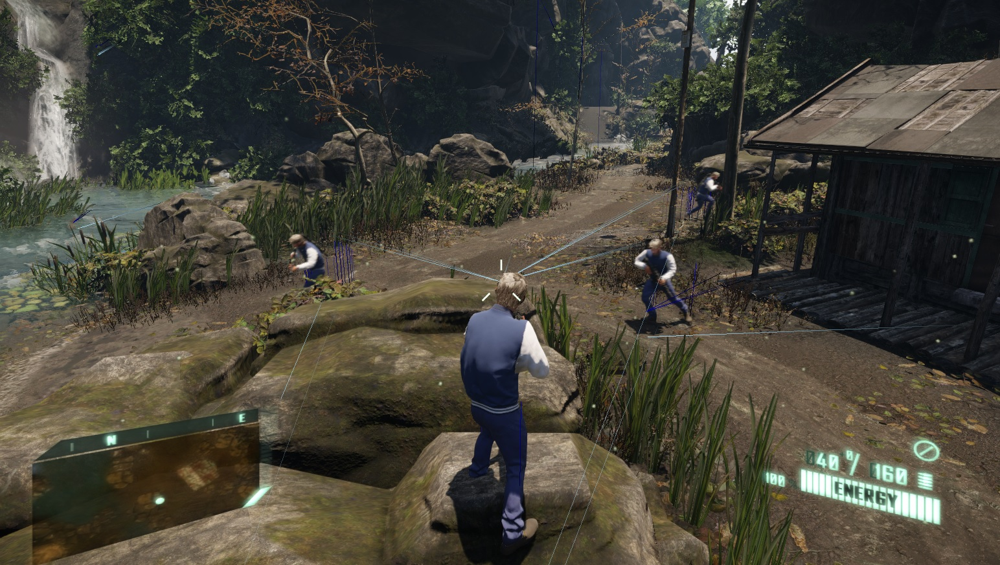
Пример2: p_draw_helpers r_g (р - показать спит твердые тела и г - показать геометрию)
Рис1. Отображает твердые тела в спящем состоянии. (Выделено красным)
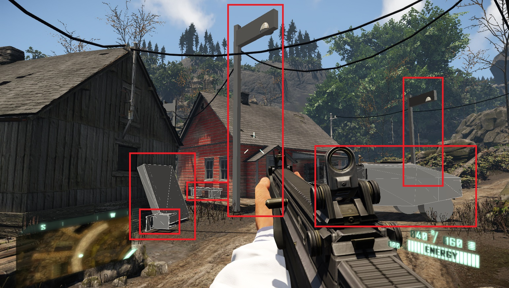
Рис.2. Отображает твердые тела, которые все еще находятся в спящем состоянии. (Все еще выделено красным). Зеленая подсветка отображает объекты (я только что снял), чтобы показать их в активном состоянии. Это помогает различать два типа физических состояний.
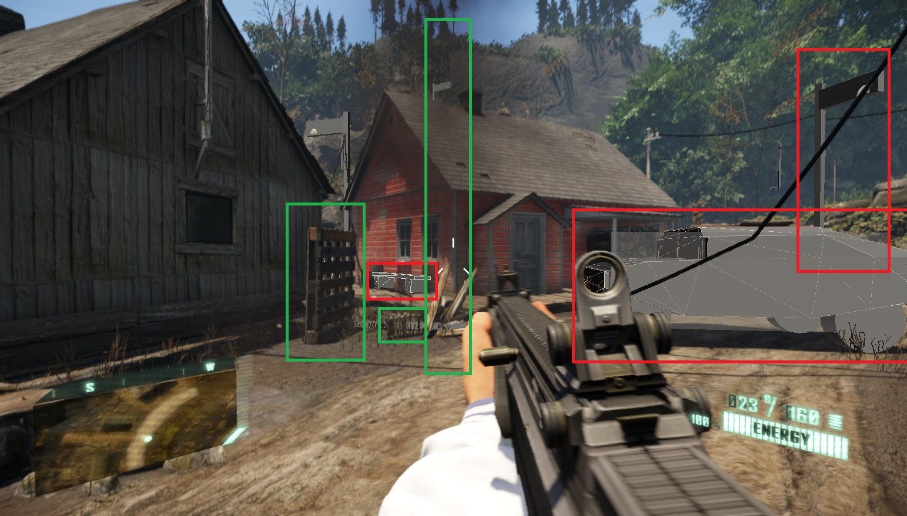
Пример3: p_draw_helpers R_g (Р - показать Активный твердые тела и г - показать геометрию)
Это отображает обратную картину предыдущего примера. Где отображается только геометрия активных объектов.
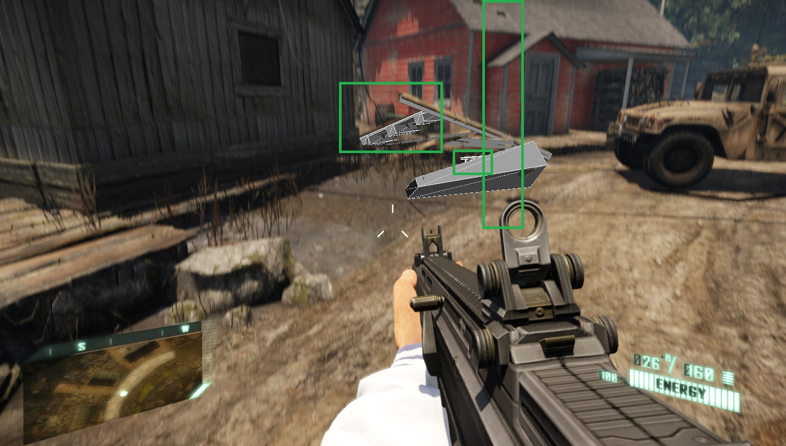
Пример 4: p_draw_helpers r_c (р - показать спит твердые тела и с - контактные лица)
Это отображается с помощью лучей short, где физические объекты вступают в контакт с другими объектами.
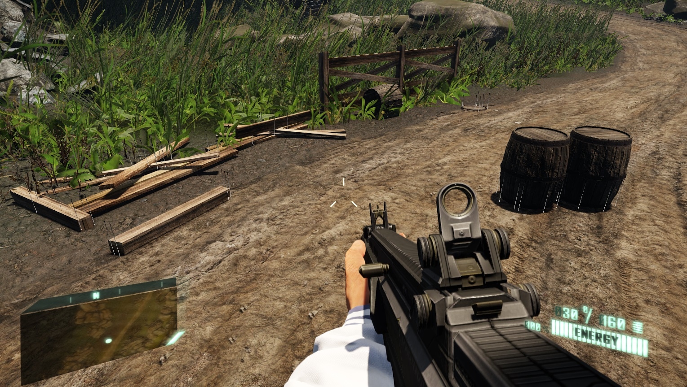
Пример5: p_draw_helpers R_j (Р - показать Активный твердые тела и дж - показать совместную информацию)
При разрушении бьющегося предмета стыки будут подсвечены.
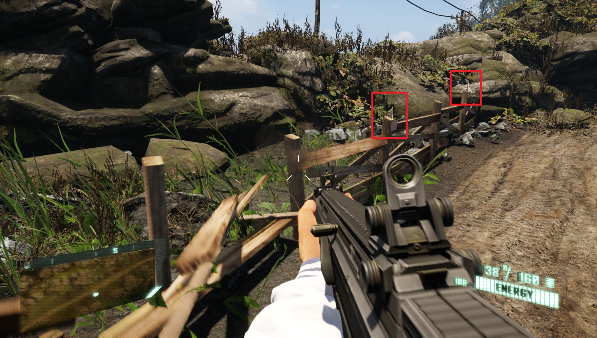
Пример6: p_draw_helpers s_b (с - показать объекты static и б - показать ограничивающую рамку)
Все объекты static отображают свою ограничивающую рамку, включая кисти, растительность и физические объекты с нежесткими телами.
Обратите внимание, что AI и HMMWV не отображают ограничивающую рамку. Это связано с тем, что они не являются объектом static.
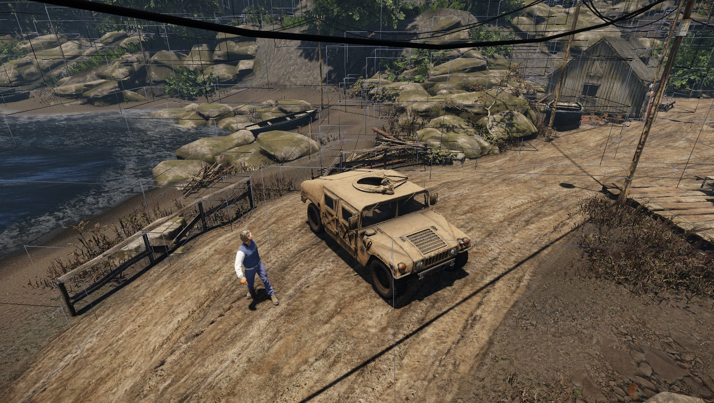
Пример7: p_draw_helpers т (т - местность)
Отображает физическую информацию о местности.
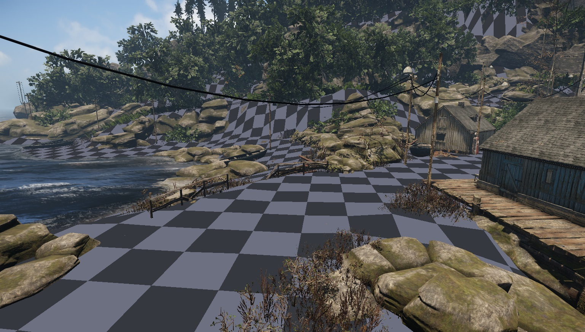
Пример8: p_draw_helpers е (е - карты окклюзии взрывов)
Отображает информацию о взрывах. Каждый из серых маркеров указывает место взрыва на поверхности.
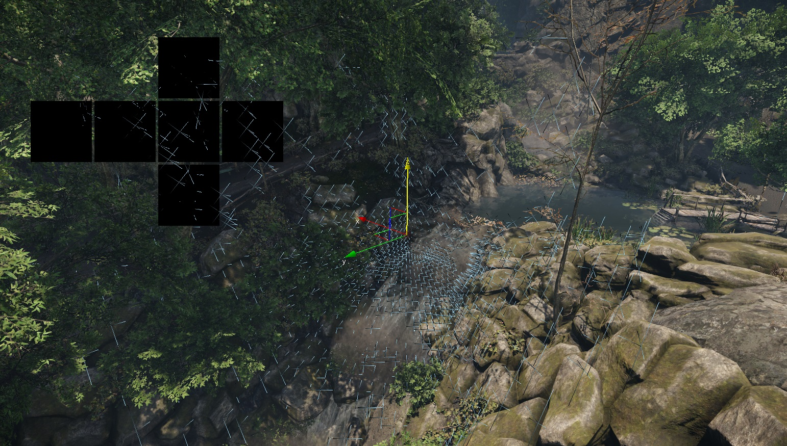
Объединение нескольких режимов просмотра отладки физики одновременно
Иногда вам может потребоваться визуализировать несколько типов сущностей и/или информацию о них одновременно. Вы можете легко объединить их вместе, просто добавив их флаг в p_draw_helpers. Проверьте следующие примеры.
Пример 1: p_draw_helpers a_bg (а - выставочные площадки и б ограничивающие рамки + г геометрия)
В этом примере показана физическая система, связанная с областями, с ограничивающими рамками + геометрией) 1 Тип с несколькими Помощники.
На рисунке (слева направо) мы видим объем силы тяжести, площадь ветра и объем воды.
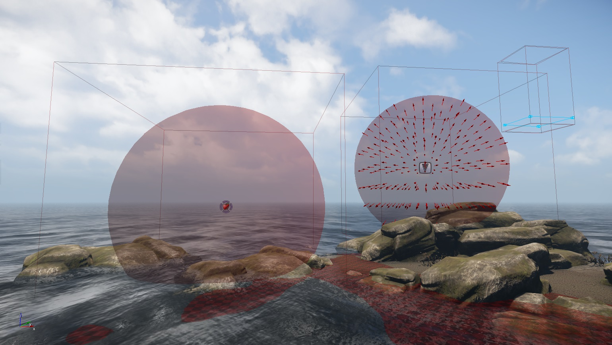
Пример 2: p_draw_helpers larRis_g (показать г - геометрия для л - живущий, а - территории, р - спит, Р - активный, я - независимый и с - static)
Этот пример в другом направлении, множественный Типы с 1 Помощник (геометрия)
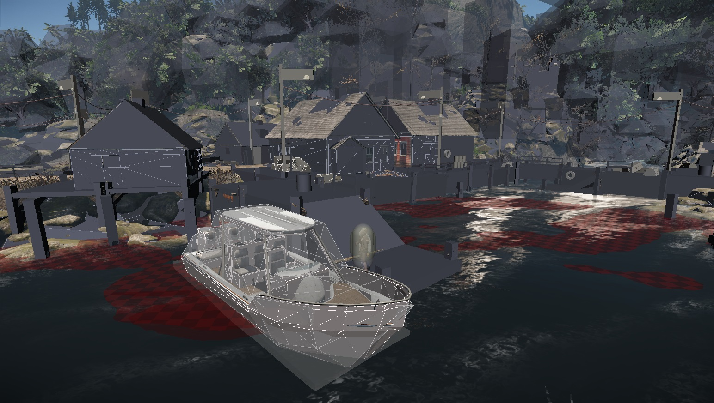
p_profile 1
В этом режиме детализируется информация об общем количестве объектов, запросах в очереди и шаге мирового времени в мс.
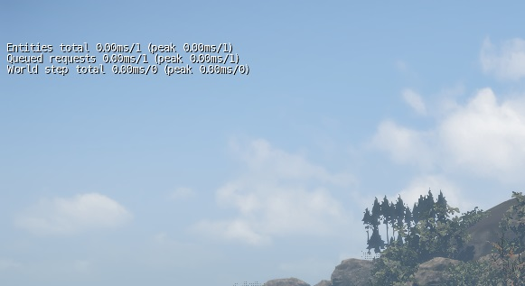
p_profile_entities 1
Перечисляет физические объекты, активные на уровне. с присвоенным им именем и EntityID.
Организованный верх/низ по затраченному времени (мс). Поэтому легче найти самое дорогое вверху.
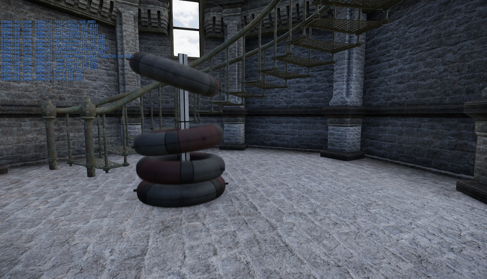
Объедините p_profile 1 и p_profile_entities 1
Вы можете объединить эти 2 CVar вместе, чтобы в дальнейшем разбить объекты на группы. Чтобы увидеть, сколько вы тратите в мс для каждого класса объектов. Поскольку 16 лучших игроков перечислены в левом верхнем углу экрана, вы можете телепортироваться к каждому с помощью дополнительной переменной...
p_jump_to_profile_ent Н (N равно 1–16)
Кроме того, первые 5 объектов в списке привязаны к сочетаниям клавиш. альт+1 -> альт +5.
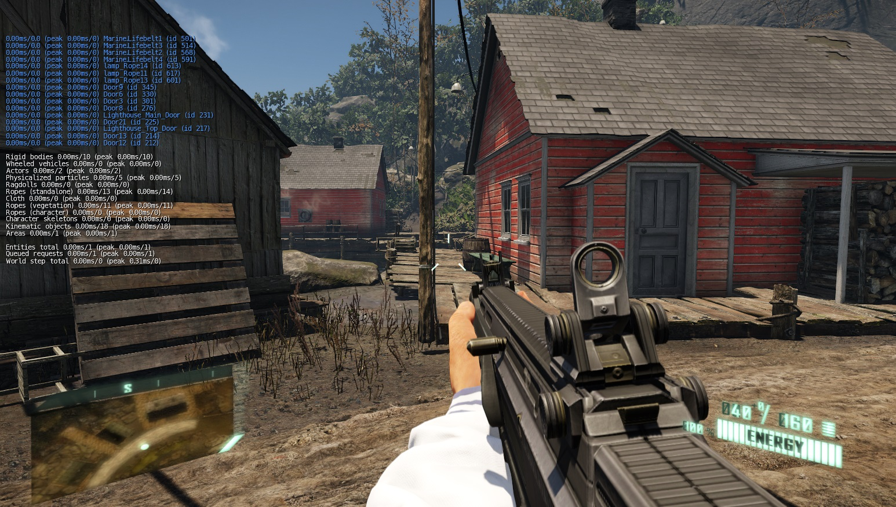
p_profile_functions 1
Показывает список всех приведения лучей/примитивов и какая dll их запрашивает.
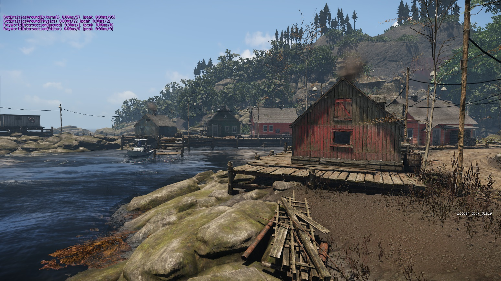
p_debug_joints 1
На этом отладочном рисунке показана масса объектов в кг и сустав, связанный с объектом в 3ds Max.
Для отображения суставов необходимо активировать p_draw_helpers 1или любая другая комбинация вышеперечисленного p_draw_helpers type_helper сначала.
При разрушении хрупкого соединения вы получите информацию о силах, которые сломали это конкретное соединение. (тянуть, сгибать, сдвигать).
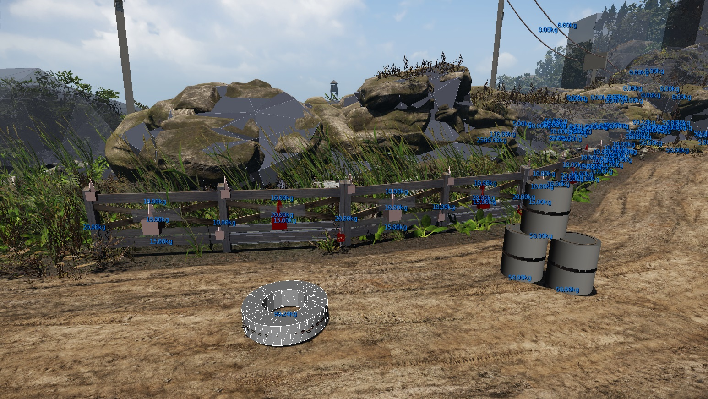
Автономный отладчик физики
Отладчик физики — это автономный исполняемый файл Windows, который может загружать дампы физического мира из движка и запускать на нем отдельное физическое моделирование. В настоящее время не включен в сборки по умолчанию; соответствующую опцию необходимо включить вручную в CMake при создании решения.
Чтобы включить эту функцию, убедитесь, что вы создаете дампы физического мира. Функция CPhysicalWorld позволяет вам это сделать, а также вы можете использовать cvar "p_do_step 2" это создает worldents.txt и worldgeoms.txt файлы в корневой папке сборки. Это позволит вам загружать дампы в PhysDebugger.exe либо в качестве параметров запуска, либо через главное меню. Кроме того, квар p_do_step 3 позволяет создать двоичный дамп (world.phump). Вы можете загрузить этот двоичный дамп вместо мира текстовые файлы, упомянутые выше.
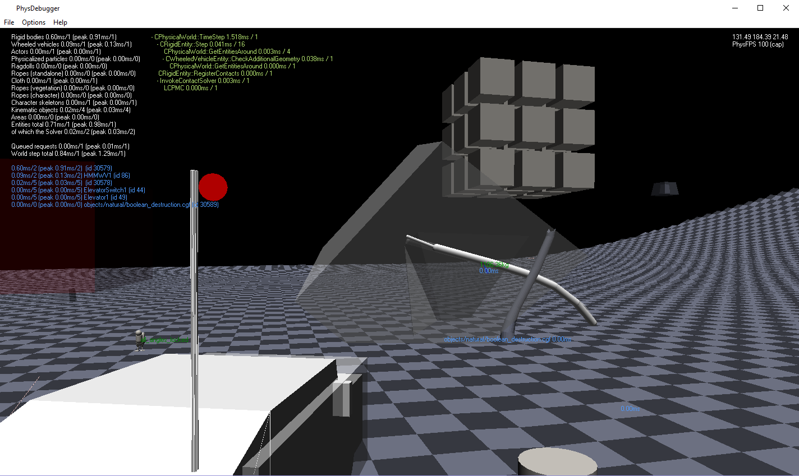
В меню можно изменить несколько параметров, таких как размер шага (фиксированный или в реальном времени), отображение кода и профилировщика объектов, количество рабочих потоков, дополнительные типы помощников. Кроме того, во время моделирования можно обладать объектами с Shift+Вправо щелкните и используйте базовые элементы управления движением WASD+пробел (особенно для игроков и колесных транспортных средств). Чтобы избежать прерывистости камеры при перемещении одержимых объектов, можно включить синхронизацию рендеринга и физики (однако не рекомендуется для профилирования, поскольку это может повлиять на результаты).

CVars
Квар/Команда | Описание |
|---|---|
| p_do_step 2 | Опция бэкдора по умолчанию для создания дампов мира. |
| p_do_step 3 | Позволяет создать однофайловый двоичный дамп. |